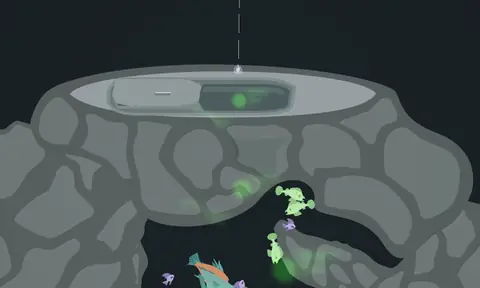
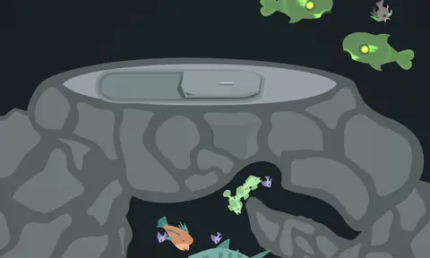
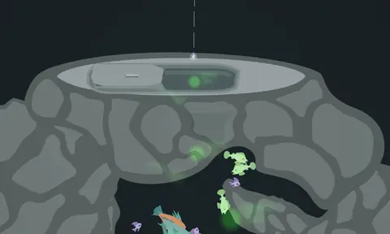
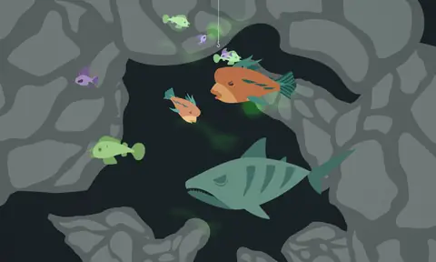
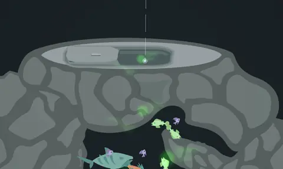
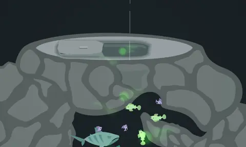

Package detail
The Silo
Version 2.3.0
What it does
Open the Missile Silo hatch in NewWorld with a nearby cast lure and descend into its flooded shaft. Silo 2.3.0 keeps the rock body intact: only the hatch plate slides, and the foreground rim briefly hides the lure, line and fish as they pass behind the rock lip. Four deep-water species use the normal fishing rules.
Requirements
- JAMM-CGF configured with the untouched August 2023 legacy VM
data.win(bytecode 16). - A separate game copy for the built output; the current Steam YYC archive is not a compatible build base.
- Bring a rod and boat that can reach the deep trench; a light helps locate the hatch.
Install
- Download this source ZIP.
- In JAMM, choose Add mods and import the ZIP.
- Enable it in a profile, run Check, then build or install to a separate game copy.
In-game controls
- Bring a rod and boat that can reach the trench. Use a light to find the entrance and bring a cast lure within 250 room pixels of the hatch.
Screenshots












How it works
The launch-shaft Area API declaration adds cave-rock pieces, four Geiger lights and a hatch controller in NewWorld. Its follow anchor is the native MissileSilo at (33984, 11570), so JAMM translates the layout if another selected mod moves the landmark. In a competing move, area resolution follows the latest surviving placement in profile order; overlapping room edits are reported as CGF-AREA-001.
When closed, the native MissileSilo instance uses frame 0 of spr_silomask as its collision mask. A cast lure inside 250 room pixels starts a 1.55-second animation. The controller's hatch_step.gml advances the door state and slides one hatch plate along the hatch's local X axis; hatch_draw.gml draws the animation and near rim. MissileSilo's native Create and Step events stay intact. the surrounding rock does not split. At full travel it switches collision to shaft-mask, which clears the passage. Area placement and free-water spawn checks use the closed mask before the animation.
The controller composes a shallow foreground crop from sampled vanilla rock pixels and draws it at depth −19.25: in front of the lure and line at −1.55, and between fish and the native lighting pass at −19.5. The rear rock remains behind the lure. This ordering makes the near lip occlude the lure briefly as it crosses; the darker shaft makes it visible again below the rim. The hatch follows the anchor's rotation and scale.
The controller reads the active slot's [JAMM_Areas] flag at load. A saved open hatch starts passable and lit; a different slot remains closed. Four species spawn in separate within regions and use normal Fish parents, Fishalog registration, bites and catches. Their hooks enable deep-water movement, recover from walls and guide fish toward their home water. The package's art recipes sample the player's own base archive during the local build.
- Closed mask
- Slide one plate
- Open shaft mask
- Rim hides lure
Technical facts
| Package type | ModKit |
|---|---|
| Manifest file | jamm-mod.json |
| Version | 2.3.0 |
| APIs used | ModKit Area API, Fish and Catalog APIs, composed sprite recipes and custom object events. |
| Assets and scripts added | 5 objects (4 fish and 1 hatch controller), 8 composed sprites and 11 standalone scripts in the source build on a clean base. The scripts include 8 fish hooks, 1 area declaration, 1 initializer and 1 Fish API registration stub. |
| Save-file behaviour | The open flag is jamm-silo:launch-shaft=1 in [JAMM_Areas] of the active native save slot (sdata<N>n_beta.ini); it is per-slot and survives reload. Fishalog progress uses [JAMM_Catalog] in the native slot save. |
| Compatibility and merge behaviour | Targets the August 2023 legacy VM archive. The follow anchor supports moves of the MissileSilo, including Cave Expansion's relocation. JAMM reports overlapping room edits as CGF-AREA-001 and follows the latest surviving move when mods compete for the landmark. |
Version history
- 2.3.0: Door-only opening; intact rock silhouette;
shaft-maskcollision at full travel; v3 solo screenshots and animated capture.
Measured performance
Seven-pack build, dock: 48.4 ms → 50.8 ms with Silo (mean of 2 runs, within run-to-run noise of ±3 ms). No measurable cost while the silo is off-screen.
FAQ
Does the rock split open?
No. In Silo 2.3.0 the near rock stays intact and one hatch plate slides into its frame; the shaft entrance is already composed behind it.
Does the opening persist?
Yes. The jamm-silo:launch-shaft flag is stored in [JAMM_Areas] in the active native save slot. Each slot remembers its own hatch state across reloads.
Files in the package
README.mdhooks/deep_water.gmlhooks/hatch_create.gmlhooks/hatch_draw.gmlhooks/hatch_step.gmlhooks/shaft_step.gmljamm-mod.jsonparts/bands.svgparts/door-detail.svgparts/door-mask.svgparts/ferrex-body-mask.svgparts/ferrex-dorsal-mask.svgparts/ferrex-fin-mask.svgparts/gills.svgparts/hatch-frame.svgparts/pits.svgparts/rim-mask.svgparts/scutes.svgparts/shaft-shadow-mask.svg